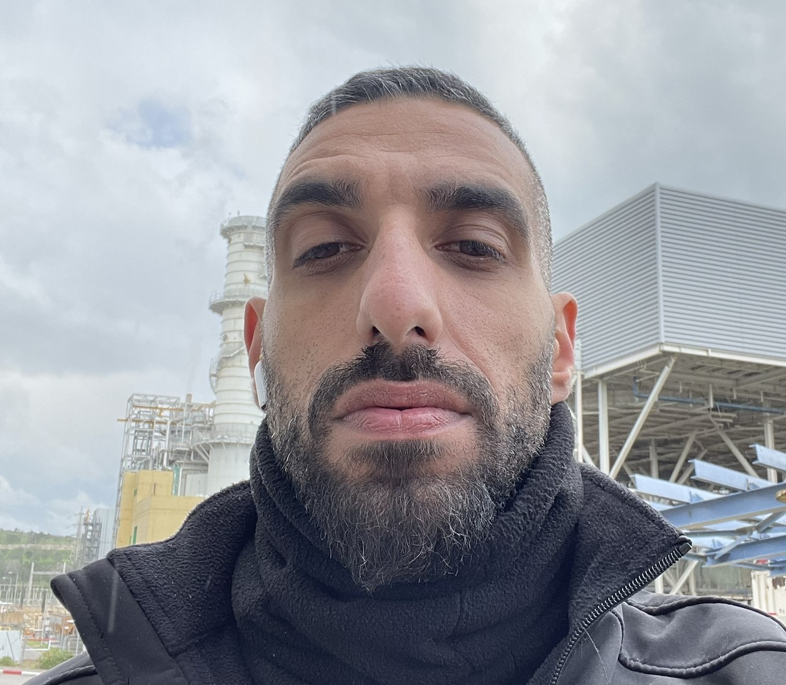

Eran Jehassy

Summary
- Highly motivated, rapid adaptation and excellent communication skills.
- Strong problem solving skills in a fast paced work environment.
Education
- B.Sc. Software Engineer - ORT Braude College of Engineering (2018-2023)
Projects
- Information retrieval: Developed an algorithm in Python, using beautiful soup library, to enhance search result
quality on a website using web crawler for better client search needs. 97.
- Final Project: Fitness Training System, using java, MVC architecture, SOLID principles (much as possible), clientserver
design. MySQL for data storage. Utilized UML tools for system characterization with use case and
sequence diagrams. 90.
Work Experience
- Security guard and Chief operating officer. - The Israel Electric Corporation (IEC). 2014-Current
- Managed 25 security guards in different levels of expertise.
- Planned work schedules, coordinated recruitment of new employees, new employee training.
Software Skills
- Good knowledge:Java, C, SQL.
- Basic knowledge: Python, HTML, CSS.
Other Skills
- Strong attraction for programming world, excellent ability to work under pressure, great interpersonal skills,
high ambition, and eager to learn.
- Languages: Hebrew – native language; English – high level.
My Hobbies
Contact Me